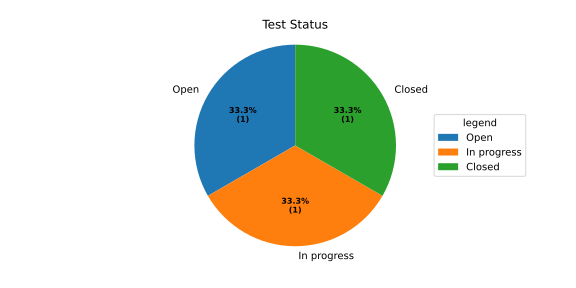

Sphinx Needs Part Two
Flow Diagram
The needflow directive is used to represent a flow diagram with various parameters.
eg.
.. needflow:: Engineering plan to develop a car
:alt: Engineering plan to develop a car
:root_id: T_CAR
:config: lefttoright,tutorial
:show_link_names:
:border_color:
[status == 'open']:FF0000,
[status == 'in progress']:0000FF,
[status == 'closed']:00FF00
Analysing Metrics
need_count role - to display the count of need items
needpie directive - to display a pie chart of need items
needbar directive - to display a bar chart of need items
Open: 1
Closed: 1
In Progress: 1
Open: :need_count:`'tutorial_tests' in tags and status == 'open'`
.. needpie:: Test Status
:labels: Open, In progress, Closed
:legend:
'tutorial_tests' in tags and status == 'open'
'tutorial_tests' in tags and status == 'in progress'
'tutorial_tests' in tags and status == 'closed'
.. needbar:: Test Status
:horizontal:
:xlabels: FROM_DATA
:ylabels: FROM_DATA
:legend:
Status, Tests
Open, 'tutorial_tests' in tags and status == 'open'
In Progress, 'tutorial_tests' in tags and status == 'in progress'
Closed, 'tutorial_tests' in tags and status == 'closed'